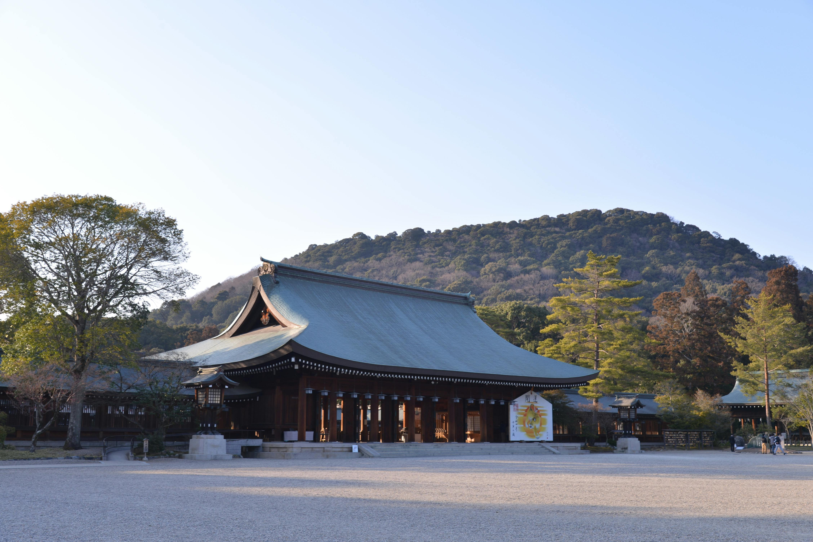
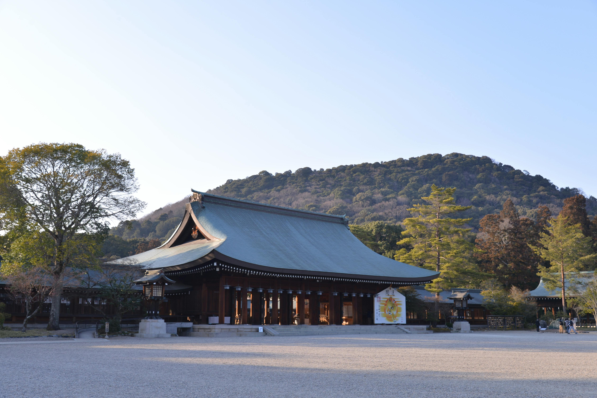

Top Experiences in Japan

Visit Ancient Temples

Admire Mount Fuji

Explore Tokyo

Witness Scenic Landscapes
Japan is a land of breathtaking landscapes, ancient temples, and vibrant culture. From the snow-capped Mount Fuji to the bustling streets of Tokyo, there is something for every traveler. Discover the deep history, warm hospitality, and stunning scenery that make Japan a must-visit destination.
Visit Ancient Temples
Admire Mount Fuji
Explore Tokyo
Witness Scenic Landscapes

 

Japan is home to thousands of ancient temples that offer a glimpse into its rich cultural heritage. Notable temples include Kinkaku-ji (Golden Pavilion) in Kyoto, Senso-ji in Tokyo, and Todai-ji in Nara. Each temple has its own unique architecture and history, making them a must-visit for history enthusiasts.
Mount Fuji, Japan's highest peak, is an iconic symbol of the country. Whether you choose to hike to its summit or simply admire its beauty from afar, Mount Fuji offers breathtaking views and a serene atmosphere. The surrounding Fuji Five Lakes region is also a popular destination for outdoor activities and relaxation.


Tokyo, the bustling capital of Japan, is a city that seamlessly blends tradition and modernity. From historic temples to cutting-edge technology, Tokyo offers a diverse range of experiences. Explore vibrant neighborhoods like Shibuya and Shinjuku, indulge in world-class cuisine, and immerse yourself in the city's dynamic culture.
Japan's diverse landscapes range from serene countryside to dramatic coastlines. Visit the picturesque Arashiyama Bamboo Grove in Kyoto, the stunning cliffs of the Noto Peninsula, or the tranquil beaches of Okinawa. Each region offers its own unique natural beauty and outdoor activities.